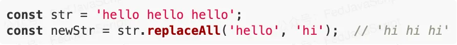
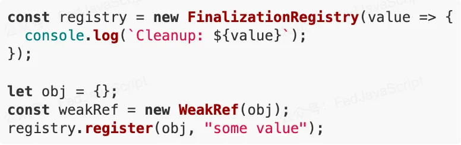
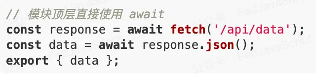
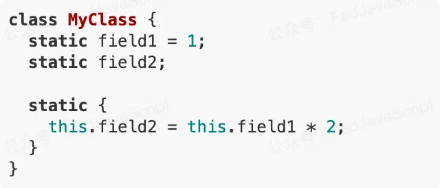
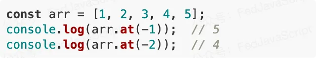
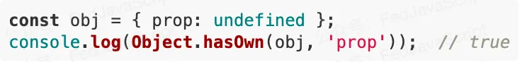
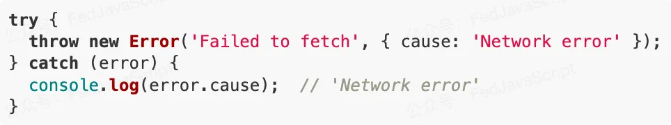
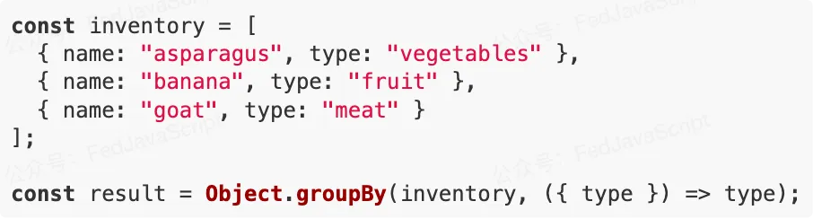
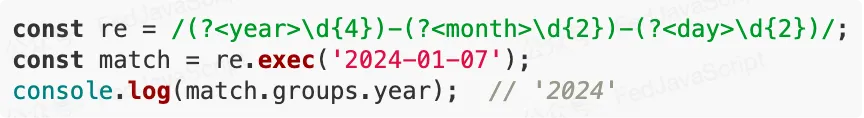
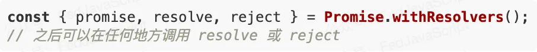

JavaScript 作为最流行的编程语言之一，通过 ECMAScript 标准的不断演进，为开发者带来了大量实用的新特性。分享 25 个能显著提升编程效率的 ES 新特性，让我们的代码更简洁、更优雅、更高效。
告别繁琐的空值检查，用简单的 ?. 优雅处理对象属性访问。
// 之前的写法
const street = user && user.address && user.address.street;
// 现在的写法
const street = user?.address?.street;
使用 ?? 来处理 null 或 undefined 的默认值设置。
const value = null;
const defaultValue = value ?? "default"; // 'default'
使用 # 声明私有字段，增强面向对象编程的封装性。
class Person {
#name;
constructor(name) {
this.#name = name;
}
getName() {
return this.#name;
}
}
按需加载模块，优化应用性能。
button.addEventListener("click", async () => {
const module = await import("./feature.js");
module.doSomething();
});
轻松处理嵌套数组。
const nested = [1, [2, 3], [4, [5, 6]]];
const flattened = nested.flat(2); // [1, 2, 3, 4, 5, 6]
更简洁的对象属性和方法定义。
const name = "Tom";
const age = 18;
const person = {
name,
age,
sayHi() {
console.log("Hi!");
},
};
等待所有 Promise 完成，无论成功与否。
const promises = [fetch("/api/1"), fetch("/api/2"), fetch("/api/3")];
const results = await Promise.allSettled(promises);
处理超大整数。
const bigNumber = 9007199254740991n;
const result = bigNumber + 1n;
统一的全局对象访问方式。
// 在任何环境下都可用
console.log(globalThis);
更强大的字符串匹配能力。
const str = "test1test2test3";
const regexp = /test(\d)/g;
const matches = [...str.matchAll(regexp)];
简化条件赋值操作。
// 逻辑与赋值
x &&= y; // 等同于 x && (x = y)
// 逻辑或赋值
x ||= y; // 等同于 x || (x = y)
// 空值合并赋值
x ??= y; // 等同于 x ?? (x = y)
返回第一个成功的 Promise。
const promises = [fetch("/api/1"), fetch("/api/2"), fetch("/api/3")];
try {
const first = await Promise.any(promises);
console.log(first);
} catch (error) {
console.log("All promises rejected");
}
提高大数字的可读性。
const billion = 1_000_000_000;
const bytes = 0xff_ff_ff_ff;
替换字符串中的所有匹配项。
更好的内存管理机制。
在模块顶层使用 await。
更灵活的类静态成员初始化。
更直观的数组索引访问。
安全的属性检查方法。
更好的错误追踪。
数组分组操作。
更清晰的正则表达式匹配结果。
更优雅的 Promise 控制。
方便的数组操作。
const arr = [1, 2, 3];
const copy = arr.toReversed(); // 不修改原数组
const sorted = arr.toSorted(); // 不修改原数组
增强类和类成员的功能。
function logged(target, context) {
return class extends target {
exec(...args) {
console.log("Starting execution...");
const result = super.exec(...args);
console.log("Finished execution.");
return result;
}
};
}
@logged
class Example {
exec() {
// ...
}
}